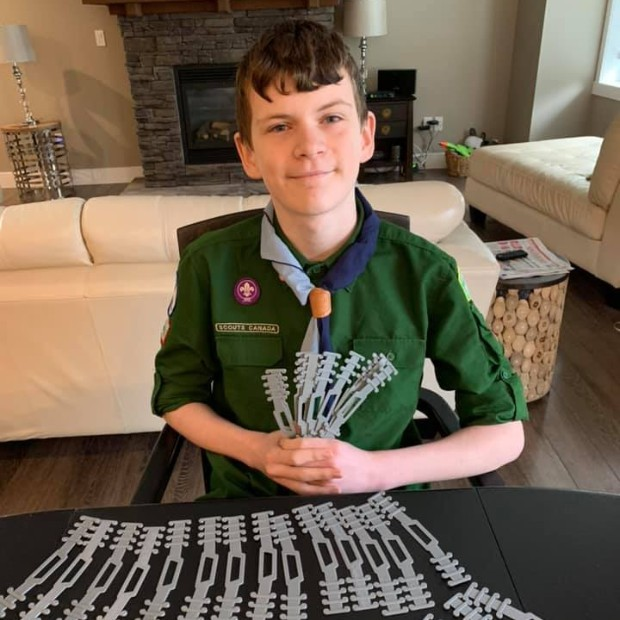

Coronavírus: pesquisadores criam equipamento para limpar ar contaminado
Iniciativa quer levar dispositivo móvel a hospitais de campanha, UTIs e outras áreas de atendimento médico.
O Pacaembu, em São Paulo: transformado em hospital de campanha,
para liberar leitos do serviço público Rahel Patrasso/Reuters
No ano passado, a Biotecam, uma startup de biotecnologia ambiental, começou a testar um equipamento desenvolvido para auxiliar na limpeza de águas poluídas. O dispositivo é uma espécie de pulmão para corpos hídricos, como lagoas, lagos e até mesmo tanques de estações de tratamento de efluentes. A ideia é oxigenar a água e trazer vida de volta a um local poluído. Para o primeiro teste, o ponto escolhido foi o lago do Parque Burle Marx, em São Paulo. Enquanto o aparelho ficou submerso, a água, que estava verde e sem peixes, começou a se tornar mais pura, com peixes e pássaros ao redor. Em meio à pandemia causada pelo coronavírus, a tecnologia será usada para purificar o ar de locais com aglomeração de pessoas contaminadas pela Covid-19.
A funcionalidade do equipamento por si só não é novidade — há outros aparelhos que realizam a mesma função. A diferença apresentada pela startup ao mercado é que a solução reduz em 50% a demanda de energia para executar o trabalho. Com a chegada da Covid-19, a ideia para despoluir as águas começou a ser adaptada para limpar o ar e devolvê-lo ao ambiente sem a presença do coronavírus. A iniciativa é desenvolvida em parceria com o Instituto Federal Fluminense (IFF), localizado em Campos, no Rio de Janeiro, e a Empresa Brasileira de Pesquisa e Inovação Industrial (Embrapii).
Basicamente, o sistema absorverá o ar em hospitais de campanha, UTIs ou outras unidades de saúde. O material passará por um reservatório onde será filtrado com uma solução desinfectante, que pode ser composta por água sanitária. Após esse processo de limpeza, o ar é oxigenado e devolvido ao ambiente — estima-se que o nível de desinfecção seja acima de 95%. De acordo com o diretor do polo de inovação do IFF, Rogério Atem, o sistema não funcionará como um aspirador de pó, que conseguiria sugar o vírus de superfícies sólidas, como maçanetas e mesas. A ideia é reduzir a contaminação que pode acontecer pelas gotículas que se dissipam no ar pela fala, tosse ou espirros de pessoas contaminadas e que ficam aglomeradas em áreas de atendimento hospitalar. Há estudos que indicam a suspensão de microgotículas no ar por até 20 minutos.
“O pico ainda não chegou e, com os hospitais de campanha, queremos oferecer uma solução que ajude no atual momento. É uma forma de reduzir a transmissão e dar mais tranquilidade a quem trabalha nesses ambientes”, explicou Atem. “Quando a transmissão do coronavírus se consolidou no Brasil, percebemos que poderíamos fazer um processo similar ao de limpeza da água, mas com outro objetivo”, afirmou. Para um hospital de campanha, o custo estimado para fabricar o equipamento é de 50.000 reais. Como a pesquisa tem base em um produto que já estava desenvolvido, a perspectiva é que a iniciativa fique pronta em dois meses.
Estudo identifica alvo potencial para o tratamento de COVID-19
Imagem: PIXABAY
No Brasil, assim como nos demais países do mundo, os casos mais graves de covid-19 têm sido registrados principalmente entre os homens com mais de 60 anos. Em um estudo apoiado pela Fapesp, pesquisadores da Unesp (Universidade Estadual Paulista) em Botucatu (SP) descobriram que justamente nesse grupo de pacientes a expressão de um gene chamado TRIB3 está diminuída nas células epiteliais do pulmão — alvos preferenciais do novo coronavírus (SARS-CoV-2).
Em artigo publicado na plataforma bioRixv, em versão pré-print (ainda sem revisão por pares), o grupo coordenado pelo professor do Instituto de Biociências (IBB-Unesp) Robson Carvalho apresenta dados de estudos anteriores que indicam o potencial da proteína TRIB3, codificada pelo gene de mesmo nome, de inibir a infecção e a replicação de vírus semelhantes ao SARS-CoV-2.
Portanto, diz o texto, "medicamentos que estimulam a expressão de TRIB3 devem ser avaliados como potencial tratamento para covid-19".
"Há uma droga com esse mecanismo de ação sendo testada contra câncer de endométrio por uma farmacêutica espanhola. Estamos estabelecendo parcerias para novos estudos com o objetivo de testar in vitro o efeito de compostos que estimulem a expressão de TRIB3 em células infectadas pelo novo coronavírus", conta Carvalho à Agência Fapesp.
Interação proteica
Inicialmente interessados em descobrir por que a prevalência de câncer de pulmão é maior em idosos, os pesquisadores da Unesp investigavam como a expressão gênica no órgão se altera à medida que as pessoas envelhecem.
Para isso, analisavam por métodos de bioinformática dados de transcriptoma (conjunto de moléculas de RNA expressas em um determinado tecido) disponíveis no repositório do projeto Genotype-Tissue Expression (GTEx), financiado pelo NIH (National Institutes of Health, dos Estados Unidos. Esse banco de dados público reúne dados moleculares de mais de 17 mil amostras de 54 tecidos diferentes, entre eles o pulmão.
"Começamos com dados de 427 indivíduos. As amostras foram estratificadas de acordo com a faixa etária: comparamos o grupo de 20 a 29 anos com o de 30 a 39, depois com o de 40 a 49 e assim por diante, até 79 anos", explica Carvalho.
Nessa primeira análise, entre outras alterações, os pesquisadores notaram que a expressão do gene TRIB3 diminui progressivamente durante o envelhecimento.
Segundo Carvalho, dados da literatura científica sugerem que a menor produção dessa proteína pode favorecer a infecção e a replicação de alguns tipos de vírus, entre eles o causador da hepatite C (HCV).
Sabe-se ainda que a molécula integra duas vias de sinalização celular —uma chamada UPR (sigla em inglês para resposta a proteínas não enoveladas) e outra conhecida como via de autofagia— que são importantes para o ciclo biológico de vários coronavírus.
O grupo teve então a ideia de cruzar esse achado relacionado ao envelhecimento pulmonar com o conteúdo de outro banco de dados denominado P-HIPSTer (sigla em inglês para predição de interações moleculares patógeno-hospedeiro por similaridade de estrutura), cujo algoritmo explora informações baseadas em sequências e estruturas moleculares para inferir a probabilidade de interações entre vírus e proteínas humanas.
Esse Human-virus interactome atlas mapeia possíveis redes de interação entre proteínas humanas e proteínas de diversos vírus, possibilitando a identificação de potenciais alvos terapêuticos.
"Embora esse atlas não tenha a rede de interação entre as proteínas humanas e as do novo coronavírus, há dados referentes ao SARS-CoV, patógeno da mesma família que causou o surto de síndrome respiratória aguda grave em 2002. É o vírus mais intimamente relacionado ao SARS-CoV-2", diz Carvalho.
"Observamos que a TRIB3 apresenta alta probabilidade de interagir com a proteína do nucleocapsídeo do SARS-CoV. E, quando se compara o SARS-CoV e o SARS-CoV-2, observa-se 94% de similaridade entre as sequências dessas proteínas", conta.
O passo seguinte foi voltar ao banco de dados do projeto GTEx e repetir a análise de expressão de TRIB3 em um número maior de amostras de pulmão —agora avaliando separadamente homens e mulheres.
"Curiosamente, não observamos nas mulheres uma mudança na expressão de TRIB3 ao longo dos anos, o que talvez ajude a explicar por que os homens idosos são os mais propensos a desenvolver pneumonia e insuficiência respiratória quando infectados pelo novo coronavírus", afirma Carvalho.
Célula-alvo
Com o objetivo de descobrir quais células do tecido pulmonar expressam o gene TRIB3, o grupo recorreu a dois conjuntos de dados públicos disponíveis nos bancos Single Cell Portal e UCSC Cell Browser.
Esses repositórios possuem dados de sequenciamento de RNA de célula única (do inglês, single-cell RNA-Seq). Com esse tipo de análise, é possível obter o transcriptoma de cada uma das células que compõem um tecido, em vez de olhar o tecido como um todo.
"Observamos que a TRIB3 está expressa principalmente nas células epiteliais dos alvéolos pulmonares, as mesmas que expressam ACE-2 [sigla em inglês para enzima conversora de angiotensina 2], proteína à qual os coronavírus se conectam para invadir as células humanas. Isso reforça a hipótese de que a TRIB3 regula negativamente a infecção pelo SARS-CoV-2, ou seja, protege a célula da infecção", diz o pesquisador.
Como explica o biólogo Diogo de Moraes, primeiro autor do artigo, essas mesmas células epiteliais são responsáveis pela produção de surfactante, um composto que evita o colabamento dos pulmões.
"Também identificamos uma diminuição na expressão de genes que envolvem o metabolismo de surfactante no pulmão de idosos. Outros estudos mostraram que a deficiência de surfactantes aumenta a vulnerabilidade para outras infecções virais e, nas últimas semanas, alguns pesquisadores discutiram sobre a reposição desses compostos no tratamento da covid-19", afirma.
A esquipe da Unesp também contou com a participação de Brunno Paiva, Sarah Santiloni Cury e João Pessoa Araújo Jr.
Colaborou ainda o pesquisador da Unicamp (Universidade Estadual de Campinas) Marcelo Mori, que recentemente teve um auxílio aprovado na chamada "Suplementos de Rápida Implementação contra covid-19" para investigar como o envelhecimento contribui para a infecção pelo SARS-CoV-2.
Garoto usa impressora 3D para aliviar dores de profissionais da saúde com uso de máscaras
Acessório "impresso" por Quinn Callander evita que as máscaras tenham de ser presas à orelha. Design está disponível na internet e já foi baixado milhares de vezes

Quinn Callander: garoto é escoteiro e quis ajudar após ver apelo de hospital canadense (Foto: Reprodução/Facebook)
Em meio aos esforços contra o coronavírus, uma realidade tem ganhado cada vez mais evidência: o esforço e as dores dos enfermeiros, médicos e outros profissionais de saúde na linha de frente contra a covid-19. Imagens de profissionais com o rosto marcado pelas máscaras de proteção, por exemplo, têm circulado pela internet mundialmente. Foi o que moveu o garoto canadense Quinn Callander a ajudar como podia.
Ele havia visto o apelo de um hospital por soluções que aliviassem o problema. Após encontrar um projeto na internet, usou sua impressora 3D para criar um acessório simples, mas muito útil. Ele serve de apoio para os elásticos das máscaras, evitando que elas pressionem as orelhas dos profissionais após várias horas de uso.
Protetores evitam que máscara gere pressão nas orelhas dos profissionais (Foto: Reprodução/Facebook)
A iniciativa ganhou evidência após uma postagem da mãe do garoto, Heather Roney, no Facebook. A foto mostra Quinn posando orgulhoso com os acessórios, que seriam depois doados a serviços locais de saúde. “Precisamos de mais voluntários para acionar suas impressoras 3D e doar esses protetores auriculares para hospitais e profissionais médicos!”, convoca ela no texto.
Protetores evitam que máscara gere pressão nas orelhas dos profissionais (Foto: Reprodução/Facebook)
O design usado por Quinn foi publicado pelo canadense Ken Lord no site Thingiverse. Ele, por sua vez, adaptou a criação de outro design postado anteriormente por outra pessoa. "Eu sou apenas uma das muitas pessoas que contribuem para o esforço”, disse ele ao site Interesting Engineering. O grupo para o qual contribui já doou cerca de 4 mil desses acessórios.
Ele diz que ter seu projeto vinculado à postagem viral da mãe de Quinn foi sorte. “Graças a isso, meu arquivo foi baixado cerca de 35 mil vezes por pessoas em todo o mundo, que agora estão fazendo protetores auriculares para seus profissionais de saúde locais”, afirmou ele.
Idosa de 97 anos recebe alta hospitalar após se curar do coronavírus
Gina Dal Colleto vive em Santos e é a única viva entre 11 irmãos. Ela contou aos médicos que tem vida ativa, gosta de cozinhar e fazer compras.
Gina tem 97 anos e ficou internada com coronavírus em SP — Foto: Rede D´Or/Divulgação
Uma aposentada de 97 anos recebeu alta de um hospital privado na capital paulista neste domingo (12), após ser curada do novo coronavírus (Covid-19). Gina Dal Colleto é uma das pessoas mais velhas a se curar da doença no Brasil.
Segundo os médicos, Gina foi internada no dia 1º de abril com sintomas como falta de ar, tosse e confusão mental.
“Ela estava muito fraca, com a oxigenação em 75%, quando tem que ser, no mínimo, 93%. Trouxemos ela imediatamente para a UTI, onde ficou por cinco dias”, explica Ludhmila Hajjar, cardiologista e intensivista do Hospital Vila Nova Star.
Gina foi diagnosticada com o vírus Influenza, causador da gripe comum, e também com o Sars-CoV-2, o vírus da Covid-19.
Além da idade avançada, outro fator de risco da paciente era um problema no coração. “Ela tem dois stents e o coração também foi afetado pelo coronavírus. A paciente teve inflamação cardíaca e pulmonar”, afirma a cardiologista.
Segundo a médica, a paciente foi tratada com antibióticos, diuréticos, corticoide e cloroquina. “A cloroquina foi usada por cinco dias, com a paciente internada e sob uma avaliação criteriosa de eventos adversos que poderiam ser causados pelo medicamento, e que, felizmente, não aconteceram com esta paciente”, explica a intensivista.
Com seis netos e cinco bisnetos, a nonagenária deixou o hospital sob aplausos dos profissionais.
O estado de São Paulo já tem mais de 560 mortos pela doença e 8 mil infectados.